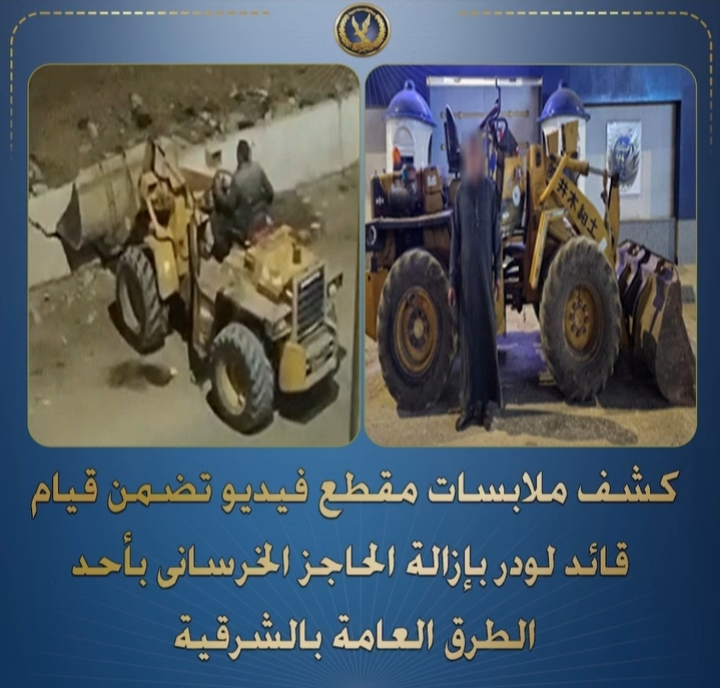

✦ وحدة الرصد الميداني - مديرية أمن الشرقيةرصدت الأجهزة الأمنية بوزارة الداخلية تداول مقطع فيديو عبر منصات التواصل الاجتماعي، يظهر قيام أحد الأشخاص بقيادة معدة ثقيلة "لودر" لإزالة حاجز خرساني بأحد الطرق العامة في نطاق محافظة الشرقية. وفور رصد الواقعة، باشرت الجهات المختصة تحرياتها لتحديد هوية قائد المعدة والوقوف على أبعاد الموقف، بالنظر لما قد تشكله هذه الأفعال من تأثير على نظام الحركة المرورية وسلامة المنشآت العامة في المنطقة.
عقب تقنين الإجراءات وتكثيف التحريات الميدانية، تمكنت مديرية أمن الشرقية من تحديد هوية المتهم وضبطه والمعدة المستخدمة في الواقعة. وبمواجهته، أقر بارتكاب الواقعة بهدف فتح ممر مروري عشوائي في الطريق، وتم تحرير المحضر اللازم وإحالة المتهم إلى النيابة العامة لمباشرة التحقيقات. وتأتي هذه الخطوة في إطار تطبيق القانون ومنع أي تعديات غير مصرح بها على حرم الطرق العامة التي تنظمها الجهات المعنية.
ويعكس التحرك السريع للأجهزة الأمنية كفاءة منظومة الرصد والمتابعة في التعامل الفوري مع المخالفات التي تمس الشارع المصري. إن الجهود المبذولة في سرعة تحديد هوية المخالفين وضبطهم تساهم بشكل مباشر في الحفاظ على النظام العام وصيانة ممتلكات الدولة، وتؤكد على الالتزام بفرض سيادة القانون وحماية البنية التحتية، بما يضمن استدامة سلامة الطرق وتسهيل حياة المواطنين اليومية.